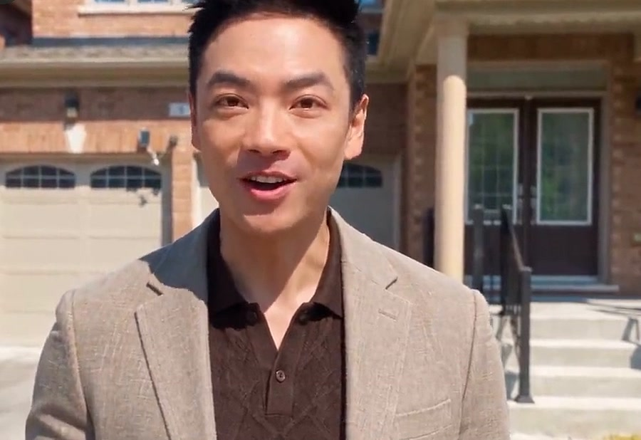

烘焙Bakeries
从揉面到出炉，你用了什么料、怎么做，客人看完就想下单。From kneading to the oven, every ingredient and step on show, so customers want to order before the video ends.
海外华人小店的 AI 数字人工作室AI digital humans for overseas Chinese small businesses
我们给你的店做一位数字人员工。招牌菜、新品、门店，它替你出镜、替你介绍，你只管把产品做好。 We build your shop a digital employee that presents your dishes, products and space on camera, so you can stay in the kitchen.
从揉面到出炉，你用了什么料、怎么做，客人看完就想下单。From kneading to the oven, every ingredient and step on show, so customers want to order before the video ends.
招牌菜端上桌冒着热气，原料一层一层拆开，数字人在旁边替你讲每一样用料。Your signature dish arrives steaming, its ingredients come apart layer by layer, and your digital host explains each one.
不用请模特拍广告，数字人员工上脸试用给客人看。No model shoot. A digital model tries the product on for your customers.

我自己的房源视频，从以前的三到五天，变成现在的三个小时。My own listing videos went from three to five days of production to three hours.
以上为示范作品，人物与画面由 AI 生成。身心灵疗愈、假发电商两个行业的客户项目正在进行中。 The work above is demonstration footage; people and scenes are AI-generated. Client projects in wellness and hair e-commerce are in progress.
听你讲你的店、你的客人，和你最想卖的那样东西。You tell us about your shop, your customers and the one thing you most want to sell.
拍下产品和门店就够了。不用打光，你也不用出镜。Snap your products and your space. No lighting, and you never appear on camera.
定形象、定声音、定说话的方式，第一批成片交给你确认。We set the look, the voice and the way they speak, then hand you the first videos to approve.
每周发布。评论区留下关键词的客人，会自动收到你的私信。We publish weekly, and anyone who comments the keyword gets your message in their DMs automatically.
一家店怎么用数字人拍、拍什么、怎么接单，整套做法摊开给你看。How one kind of shop films with a digital human, what it shoots, and how it turns views into orders.
在 Instagram 看 @calvin060626Follow on Instagram @calvin060626卖了十三年别人的品牌，
现在帮你讲你的。 Thirteen years telling other brands' stories. Now I tell yours.
我是 Calvin。在 Chanel、Dolce & Gabbana 做了十三年奢侈品，每天的工作是给客人讲一件衣服的面料、剪裁和来历，在每一家品牌都是第一个年销售额过百万加币的人。后来我在多伦多做地产经纪。现在我用 AI 数字人，帮海外华人老板把自己的店讲好。 I'm Calvin. I spent thirteen years in luxury at Chanel and Dolce & Gabbana, explaining the fabric, cut and history of every piece, and at each house I was the first to pass C$1 million in annual sales. Then I sold homes in Toronto. Now I use AI digital humans to help overseas Chinese business owners tell the story of their own shops.
直接约一个时间视频聊，或者 WhatsApp、写信告诉我你的店名、所在城市，和你最想卖的那样东西。Book a video call, or message or email me your shop's name, your city, and the one thing you most want to sell.